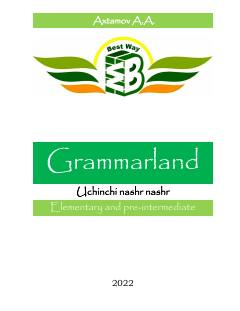

G1Ingliz tili grammatikasini sodda usulda o'rgatuvchi boshlang'ich va o'rta darajadagi qo'llanma.
Ingliz tili grammatikasini o'rganuvchilar uchun sodda va tushunarli tilda yozilgan o'quv qo'llanma. Kitobda asosiy qoidalar, misollar va test savollari o'rin olgan bo'lib, u boshlang'ich va o'rta darajadagi o'quvchilar uchun mo'ljallangan.